Monitor de licitações
Mapeia as licitações públicas em que a empresa pode concorrer e mede o quanto cada uma se aproxima dos serviços que ela oferece. Um pipeline diário no Airflow varre 20 portais públicos de compras, organiza tudo em arquitetura Medallion no Postgres e dá a cada processo uma nota de relevância a partir de três sinais independentes. A entrega é uma planilha por e-mail e um painel em FastAPI.
- 20portais públicos de compras coletados em paralelo
- 3sinais combinados na nota, com pesos distintos
- 12verticais de negócio classificadas por LLM
- 3chaves de deduplicação na camada bronze
Coleta e camadas
COLETA E CAMADAS

SCORE E ENTREGA

Cada portal tem um coletor próprio, e a regra de disparo do Airflow deixa um portal fora do ar falhar sozinho e gerar alerta sem travar os demais. Os coletores levantam erro explícito diante de página de bloqueio, status de erro ou falha de rede persistente, com backoff, e tratam lista vazia como resultado legítimo.
A camada bronze é uma landing imutável que guarda o JSON original ao lado do registro tratado, e cada registro recebe uma impressão digital derivada do identificador de origem. A deduplicação usa três chaves, o hash do conteúdo, o identificador unificado e o par formado pela fonte e o identificador nativo, o que impede que uma mudança de parser faça registros antigos entrarem como novos. A silver reduz tudo a poucas colunas tipadas, escolhendo a melhor data e o melhor valor entre os que cada fonte oferece, e a gold aplica exclusão por palavra inteira, baixa os anexos em PDF e reaplica o filtro sobre o texto extraído.
Nota de relevância e entrega
A nota de relevância combina, com pesos distintos, palavras-chave do domínio, um classificador zero-shot mDeBERTa em GPU e a avaliação do gpt-oss-120b via Groq, que tem o maior peso. O classificador roda numa fila do Celery dedicada a um worker com GPU, e quando o texto é curto demais para o LLM a nota usa os dois primeiros sinais e é renormalizada.
O mesmo modelo classifica cada objeto em uma de doze verticais de negócio, em lotes de dez itens que amortizam o prompt de sistema, e um limitador conta os tokens consumidos por chave numa janela deslizante de sessenta segundos para respeitar a cota diária.
A entrega é uma planilha por e-mail e um painel em FastAPI com os filtros na query string, o que torna qualquer recorte compartilhável por URL. O painel também permite baixar a base em três níveis, que correspondem às camadas do Medallion.
Galeria
-

O funil do Medallion, camada por camada, da coleta bruta ao que passa do corte de relevância.
-

Distribuição da nota combinada em escala logarítmica, com o corte do e-mail em 0,35 e o corte de relevância em 0,5.
Apache Airflow · mDeBERTa zero-shot em GPU · Groq · PostgreSQL · Celery · Object storage · FastAPI